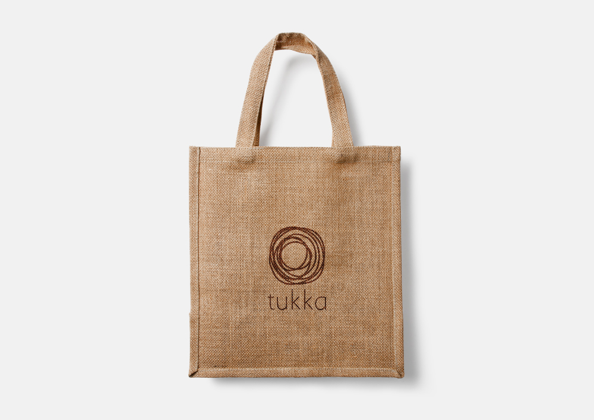
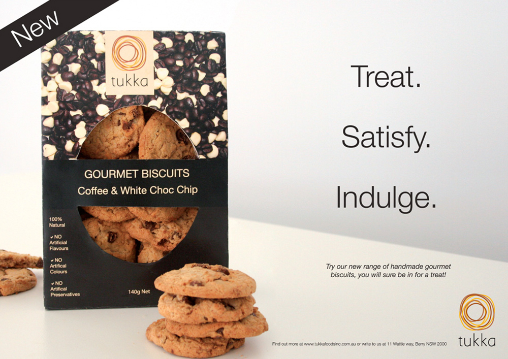

Tukka
Tukka is a hypothetical Australian gourmet food and beverage company, which supports locally sourced and sustainable ingredients. The overall branding reflects the Australian outback, through the earthy colours and rounded shapes used throughout. The simpleness of both the visual and written elements communicates an up-market and gourmet feel. The multiple circles on the logo are derived from the Aboriginal art of dot paintings, helping portray an eco-friendly, Australian owned company.

